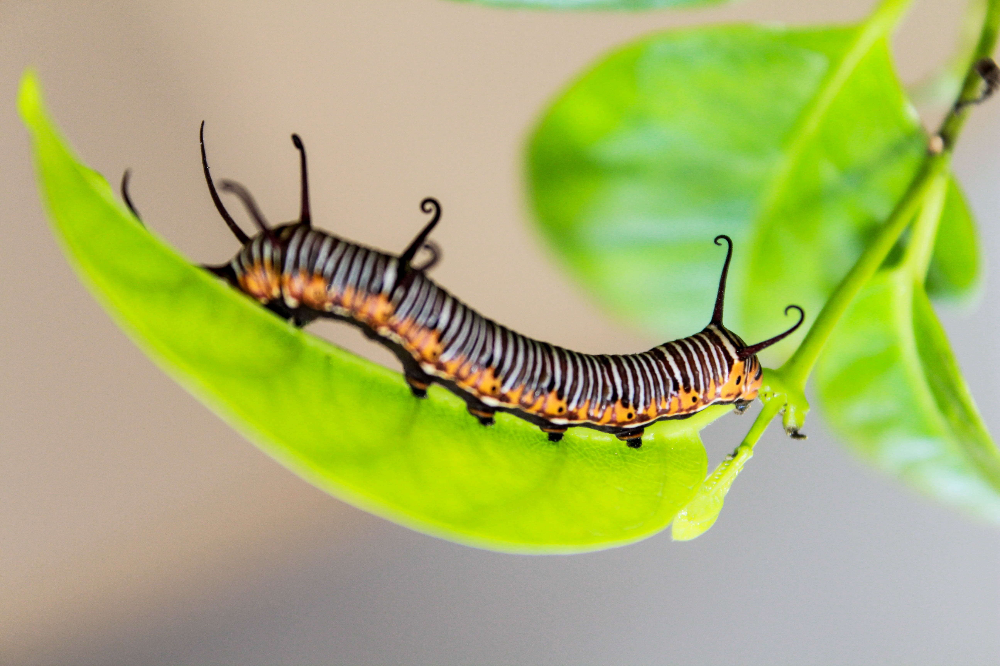
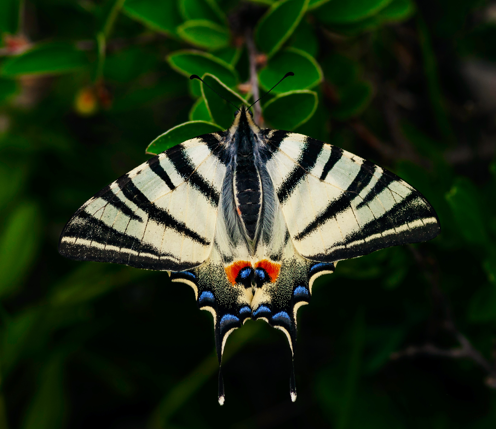

One of my favorite things is a butterfly. Butterflies have the typical four-stage insect life cycle. Winged adults lay eggs on the food plant on which their larvae, known as caterpillars, will feed.
In as much as I may love butterflies, I am totally repulsed by caterpillars!
The caterpillars grow, sometimes rapidly, and when fully developed, pupate in a chrysalis. When metamorphosis is complete, the adult insect climbs out and flies off after its wings have expanded and dried off.
Butterflies have four wings that are often brightly colored with unique patterns made up of tiny scales. Did you know that there could be between 15000 and 20000 different species of butterfly! Birdwing butterflies have large, angular wings and fly in a similar way to birds.
The adult butterfly has four wings that are covered with tiny scales that give them their colorful and diverse designs. They have six legs, two antenna, a head, compound eyes, a thorax, and an abdomen. Butterflies also have fairly good eye sight.
In Watamu, there is a butterfly farm where one can go butterfly-watching and enjoy over 300 species.